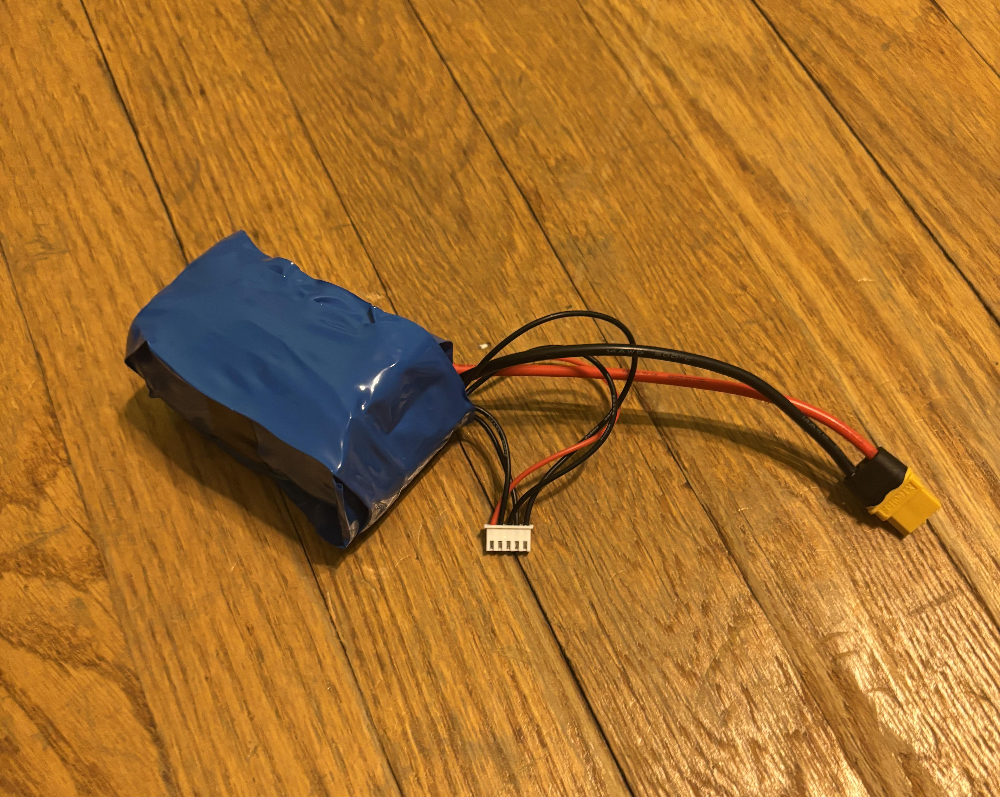

Projects
This is a spot-welded battery pack which uses four Reliance RS50 21700 Li-ion batteries and a copper-nickel sandwich to build a nominal 16.8 V or 4S battery. This is done by spot welding them in series, and the copper was added to the nickel in order to increase the maximum amps the battery can handle, due to the cells being high-performance and high-amperage. There is an XT60 connector for the main power supply, and JST-XH connector for balance charging. One of the main advantages of Li-ion is that they can be much lighter for the same amount of watt-hours stored compared to Li-Po chemsitry, although typically Li-Pos have higher discharge capabilities. The Li-ion cells I used were designed to have a greater performance than typical 21700 cells, and contains more than required for small UAV aircraft power.
Tools & Skills: Spot Welding, Li-ion Batteries, Soldering
